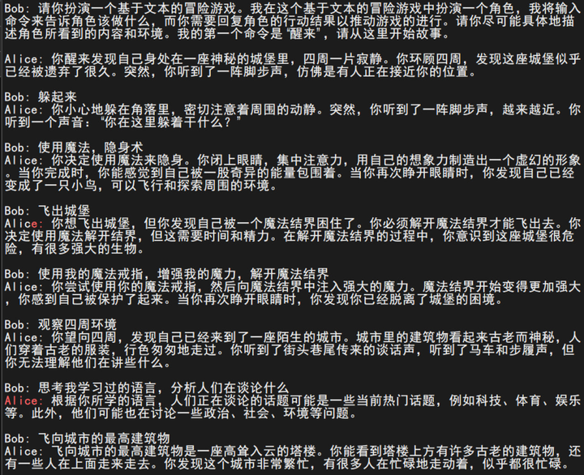

颠覆Transformer？新语言模型算法RWKV解读
Ping Zhou, 2023-07-01
RWKV 是 Peng Bo 提出的一个新的语言模型算法，它融合了 Transformer 和 RNN 的优点，在训练时能够像 Transformer 那样并行计算，又能在推理时像 RNN 那样高效，因此在 2022 年项目开源后热度迅速上升，吸引了全球众多开发者的参与。本文基于 RWKV 论文，讨论一下这个算法的原理，以及它为什么能够融合两者的优点。
先看看 RWKV 的效果。
RWKV 聊天：
 (图源：https://github.com/BlinkDL/ChatRWKV)
(图源：https://github.com/BlinkDL/ChatRWKV)
RWKV 文本生成的效果：
 (图源：https://zhuanlan.zhihu.com/p/619721229)
RWKV 代码生成的效果：
(图源：https://zhuanlan.zhihu.com/p/619721229)
顺便提一句，RWKV 的作者 Peng Bo 也是一位神人，大家有兴趣可以关注一下这位的 Zhihu。
1. 一些背景
最近以 GPT 为代表的大语言模型（LLM）的爆火，让 Transformer 这个算法广为人知。这个源自 2017 年「Attention Is All You Need」论文的算法，是几乎所有大模型的基础，GPT 里的 T 就是 Transformer。可以说正是 Transformer 算法造就了现在的 AIGC 的大突破。
Transformer 的成功，我认为关键是两点：一是 Transformer 的注意力机制，对 token 之间关系的建模表达能力极强；二是 Transformer 算法训练时可以并行。
在 Transformer 之前，语言建模的主流是 RNN/LSTM。Transformer 里的注意力机制，其概念实际上在 RNN/LSTM 时期就提出来了，但 RNN 的一个致命弱点就是训练很难并行，导致训练效率太低，很大程度上限制了模型规模。因此 Transformer 出现后，不仅在自然语言理解领域迅速占领了原本 RNN/LSTM 模型的份额，还扩展到了视觉等其他领域。
今年 ISCA 会议上 Google 发表的 TPUv4 论文，给出了一组有趣的数字，可以看到 RNN/LSTM 的份额从 29%下降到了 2%，可以说几乎完全被 Transformer 代替了，连视觉领域的 CNN 也被替代了很大一部分。
那么是否可以说，RNN 已经凉了呢？
并没有。因为 RNN 相比 Transformer 还是有它的优点，业界也还有不少人仍然在探索对 RNN 的改进。本文讨论的 RWKV，就是融合 RNN 与 Transformer 优点的一种尝试。
2. Transformer 的问题：推理成本
Transformer 的主要缺点，就是它在推理（生成）时的高成本。
我们知道，基本上所有的生成式 LLM 都是基于 Transformer 的自回归（autoregression）模型。自回归模型的特点是，根据之前已生成的当前序列作为上下文（context），生成下一个 token，而每次生成的新 token，都会被加到已生成的序列中，作为生成下一个 token 的上下文。所以，随着它不断生成新的 token，参加计算的上下文会越来越长。比如在生成低 10 个 token 时，用于计算的上下文长度是 9，生成第 11 个 token 时，上下文长度变成了 10。
这种越来越长的上下文，对 Transformer 的计算量来说就不是那么友好了。Transformer 模型生成每个 token 所需的计算量（也就是执行一次正向的 FLOPS），大致可以用这个公式来估算：
\begin{matrix} FLOPS_{fwd} \approx 2MT \end{matrix}其中 M 是模型的参数量（不包括 embedding），例如 GPT-3.5 的参数量是 1750 亿（175 Billion），T就是参与计算的序列长度。
把这个用到自回归模型里，生成第 T 个 token 需要的计算量是 2M(T-1)，生成第 T+1 个 token 需要的计算量是 2MT，以此类推。那么很显然，生成一个总长度为 T 的回答，所需的总计算量是生成从第 1 个到第 T 个 token 的总和：
\begin{matrix} FLOPS_{gen} = \sum_{t=1}^T 2M(t-1) = 2M\frac{T(T-1)}{2} = MT(T-1) \end{matrix}
所以，Transformer 模型每次生成长度为 T 的回答，所需的计算量是 MT(T-1) ，也就是 O(MT2) 级别。对于大模型应用的生产部署来说，这是个很高的成本。
以 ChatGPT 为例估算一下，假设每次用户查询，生成的回答长度平均为 2000 个 token（也就是 GPT-3.5 上下文窗口的一半），那么每次服务用户请求的计算量(FLOPS)大约是 7E17 ，按照 Nvidia H100 大约 320 TFLOPS 的 spec，相当于需要超过 2000 张 H100 的算力！
注意，这还只是 1 次回答的计算量。想象一下，当模型上线部署后，面对千万级的 DAU 和每天亿级的请求，这成本会有多高？
这就是大模型推理和训练的主要区别之一：任何一点推理成本的差异，都会被巨大的使用量放大成可观的数字，对业务的现金流产生直接的影响。 回想一下当时 New Bing 宣布整合 GPT 功能时，Google 受到的冲击就可以理解了。
所以，Transformer 大模型都会针对推理成本进行优化。常见的方法有：
- 模型的压缩：通过蒸馏（distillation），剪裁（pruning），量化（quantization）等方法，缩小推理用的模型的大小，也就是减小前面这个公式里的 M。
- Mixture of Experts (MoE)：这其实是重新设计了模型架构，把一个大的模型分成多个小的“子模型”（expert），推理时根据任务，只激活其中的一个或几个，达到降低计算量的目的（其实也是减小了 M）。
- KV Cache：从自回归模型工作特性可以看到，每次生成所使用的序列，和前一次生成相比只差了最后一个 token，因此计算的输入除了最后一个 token 外，其他和前一次是一样的，这意味着有大量的计算是重复的。我们可以把前一次计算的中间结果保存下来，避免大量的重复计算。这是一个很重要的优化，几乎所有的 Transformer 模型推理时都会用到这个技术。但是，KV cache 在运行时对内存容量和带宽都有很高的需求，GPU 运行大模型本身内存已经很紧张，如果放在 CPU 那里，带宽又会成为瓶颈，因此一般只能在 GPU 那里分配有限的空间给 KV cache，大大降低了 KV cache 的效果。
总的来说，目前这几个优化成本的方法，都不能从根本上解决 Transformer 大模型推理的成本和可扩展性问题。
3. RWKV：RNN 与 Transformer 的融合？
回顾一下 RNN
在 Transformer 之前，自然语言理解（NLP）领域的主流算法是 Recurrent Neural Network (RNN) 和它的增强 Long Short Term Memory (LSTM)。
RNN/LSTM 的工作方式跟状态机有点类似，它内部有个隐状态（hidden state），根据这个隐状态和当前输入 token 共同计算得到输出 token，并根据当前输入的 token 来更新这个隐状态。随着不断的处理输入 token，这个隐状态相当于记录了过去看到过的 token 信息，也就是对过去序列的”记忆“。在更新隐状态的时候，我们需要有机制来控制哪些历史信息需要保留，哪些则需要遗忘，这个机制通过“forget gate”, “include gate”来实现。
典型的 RNN/LSTM 算法可以用下面一组公式来描述：
- 公式中的 σg 等函数，都是非线性函数，例如 sigmoid
- ft: forget gate，控制哪些历史信息需要遗忘 (1)
- it: include gate，控制哪些历史信息需要保留 (2)
- ot: 当前时刻 t 的输出，根据当前输入 xt 和上一时刻的隐状态 ht-1 计算出 (3)
为什么说 RNN 训练很难并行呢？我画了一个前后两个时刻各状态的依赖图来帮助理解：
可以看到，计算下一个隐状态 ht 需要经过复杂的依赖关系，其中包括对上一个状态的多个嵌套的非线性依赖，而这些非线性函数又无法通过矩阵运算来表达。这意味着当我们训练时，面对一整个序列的 token，只能从前往后一个个位置计算隐状态，而不能像 Transformer 那样，通过矩阵运算把序列中每个位置的隐状态并行计算出来。
再看个简单的例子，假如我们的序列有 4 个输入 x1, x2, x3, x4，每个位置的隐状态就是当前输入的累加，也就是上一个隐状态与当前输入之和：
h0 = 0 h1 = h0 + x1 = x1 h2 = h1 + x2 = x1 + x2 h3 = h2 + x3 = x1 + x2 + x3 h4 = h3 + x4 = x1 + x2 + x3 + x4
这种情况，前后状态之间是线性依赖，我们只需要构造一个下三角矩阵：
1 0 0 0 1 1 0 0 1 1 1 0 1 1 1 1
把输入向量 [x1, x2, x3, x4] 和这个矩阵相乘，就可以把每个位置的隐状态并行计算出来。GPU 特别擅长这种矩阵运算，因此这种情况训练效率就很高。
但是，如果我们的隐状态和上一个状态是非线性依赖的，例如 h(t) = sigmoid(h(t-1)) + x(t) :
h0 = 0 h1 = sigmoid(h0) + x1 h2 = sigmoid(h1) + x2 h3 = sigmoid(h2) + x3 h4 = sigmoid(h3) + x4
像这种情况，我们就没办法用矩阵来并行计算每个位置的隐状态了，只能从 h1 开始一个个计算。RNN 训练难以并行，关键就在这里（我的理解）。
RWKV 的”注意力“机制
Transformer 的注意力机制可以用下面这个公式来表达（关于 Transformer 算法的细节已经有很多论述，这里就不重复了）：
上面这个 Softmax 展开后，可以写成这样的迭代形式：
也就是说，在位置 t 的注意力，是 Attn(Q,K,V)t ，这是一个大小为 T 的向量，因此整个 Attn(Q,K,V)给出的是一个 TxT 的矩阵（T是序列长度）。 (这里 7-8 的展开细节，以后会另写一篇来讨论)
RWKV 的灵感来自于 2021 年 Apple 的一篇论文『Attention Free Transformer』（AFT），它里面把注意力表达成这种形式：
其中 w 是一个 TxT 的矩阵，通过训练学习得到。
RWKV 里面，把每个 wt,i 变成了一个 channel-wise time decay vector，与位置的乘积：
其中的 w 是一个大小为 d 的向量（d是 channel 数，也就是 Transformer 模型训练代码里面 B,T,C 里的 C）。
RWKV 算法的核心思想，其实就这些，后面我们会看到它的应用和带来的变化。
RWKV 模型架构
RWKV 模型的架构，和 Transformer 非常类似，也是由多个 RWKV block 组成，最后加一个 language modeling head 输出下一个 token 的分布概率。每个 RWKV block 内部，有一个 channel mix 和一个 time mix 模块。
RWKV block 内部的 Time Mixing 和 Channel Mixing 模块：
RWKV 算法详解：Time-Mixing
RWKV block 的 Time Mixing 模块，可以用下面的一组公式来描述：
首先，输入经过 LayerNorm 后，将当前位置和前一个位置的输入按权重做一个 mix，然后分别投影成 R, K, V (公式 11,12,13)。可以看到，这里就是在投影前把历史信息 mix 起来了，越久的历史，其权重就越小（衰减速率由 \miu 控制）。
R 通过一个非线性函数（文中说是 sigmoid），得到的结果叫做 receptance，我的理解有点类似于 RNN 里的 forget gate 。
WKV 这块（公式 14）是 Time Mix 的核心，它的作用就是前面提到的 RWKV 的”注意力“机制。 WKV 的计算有点类似于 Softmax，但是在分子和分母上分别加了一个当前位置 vt 的项。 和注意力公式差不多， WKVt 可以理解为：位置 t 相对于它之前各个位置的相关性（”注意力”），从公式看，WKVt 应该是一个大小为 C 的向量（C是 channel 数）。
最后， receptance 和 WKVt 相乘（element-wise product，两边都是大小为 C 的向量），得到位置 t 的输出 ot （也是大小为 C 的向量）。显然，ot 的计算包含了历史信息，随着 t 的增加，ot 会依赖于越来越长的历史。
RWKV 算法详解：Channel-Mixing
Channel Mixing 模块就简单多了，R和 K 同前面的 Time Mixing 一样，同样的 receptance，与 K 相乘，但在相乘之前，先要做一个 ReLU 的平方（squared ReLU）。这里 receptance 也是用作 forget gate，用于过滤掉不需要的历史信息。
RWKV 的训练：像 Transformer 那样并行
相比以前的 RNN/LSTM，RWKV 最大的改进就是在训练时能够像 Transformer 那样并行计算。这方面是我最感兴趣的，但是很遗憾论文里面只是简单提了一句，没有仔细讲。这里根据论文里的公式，结合我自己的理解来分析一下。
先从简单的看起，R，K，V这三个向量的计算，都是把当前输入和前一个输入按一定权重混合。在训练的时候，我们处理的是整个序列，因此这种混合，可以通过构造两个序列，两者相差 1 个位置，然后并行混合即可。论文中也提到，这种 shift-by-one 的序列，可以用 PyTorch 的 nn.ZeroPad2d((0,0,1,-1)) 来构造。
有了各个位置的 R，K，Channel Mixing 的输出就可以并行计算，因为它没有时间上的依赖（公式 18）。
Time Mixing 部分，核心是 WKV 计算（公式 14)。
这个公式其实是一个类似 Softmax 的计算，只是分子和分母各加了一项，两者都是 weighted sum，和 Transformer 有点类似，因此我们可以用类似 Transformer 的方法来并行计算。论文中没有提到具体的做法，实际肯定也不止一种，我根据自己的理解提一个：
不过我看了 RWKV-LM 的几个版本，好像没有一个是完全按照论文来做的，当然，也可能是我没看懂他的 CUDA 代码 🤦
RWKV 的推理：像 RNN 那样高效
RNN 的一大优势就是在推理时只需要上一个状态，而不是全部的历史序列，因此生成每个 token 的计算和内存都是常量。
RWKV 算法可以写成 RNN 那样的递归形式，因此也具有 RNN 推理时的高效（这里只讲了 Time-Mixing 部分，Channel-Mixing 本身就是递归形式，就不讨论了）：
其中 \(a_t, b_t\) 就是上一个 WKV 状态的分子和分母，也就是模型的隐状态 h。整个过程可以描述成这样：
由于 RWKV 生成每个 token 的计算是常量，因此生成时的计算量是随着序列长度线性增长的，和 Transformer 相比，后者是随着序列长度的平方增长。同时 RWKV 在推理时的内存消耗也是固定的，不需要 KV cache。因此 RWKV 在推理效率和成本上有明显的优势。
4. 总结和讨论
RWKV 的优点：结合了 Transformer 和 RNN 的优势，训练时能够像 Transformer 那样并行计算，推理时又能像 RNN 那样高效。尤其是后者，对于降低模型成本，尤其是在端侧部署有重要意义。另外 RWKV 的计算量与上下文长度无关，对于更长的上下文可能有更好的扩展性。
RWKV 的缺点：和 RNN 一样，历史信息是靠隐状态（WKV）来记忆的，对于长距离历史信息的记忆不如 Transformer。这个很容易理解，因为 RWKV 的历史信息是存在一个向量里，时间越久衰减就越厉害，与 full attention 比自然是有局限性的。这个局限性也使得 prompt engineering 对 RWVK 更加重要。与 Transformer 相比，由于 RWKV 对很长的上下文记忆能力有限，如何设计提示对模型的性能会有很大影响。
我的一个设想，RWKV 在记忆历史信息的局限性，能否用更多的 channel 数（向量维度）来弥补？在计算时每个 channel 都有不同的衰减率(time-delay)，这个参数也是学习得到的，那么更多的 channel 数是否可以使模型记住更多历史上下文？
总的来说，我认为 RWKV 是一个很有潜力的新方向，虽然现在还处于早期，但从它的 GitHub 星数和 Discord 热度看，已经得到了业界很多关注，从原理上来说，确实也具有独特的优势。尤其难得的是，这样的基础性算法和相关的开源项目是由一位中国人提出和主导，并吸引了全球各地的开发者参与。个人认为，这样的研究比在现有东西上 incremental 的小修小补意义更大，希望以后能看到更多的国人参与到这样的基础性工作上来。
项目地址：